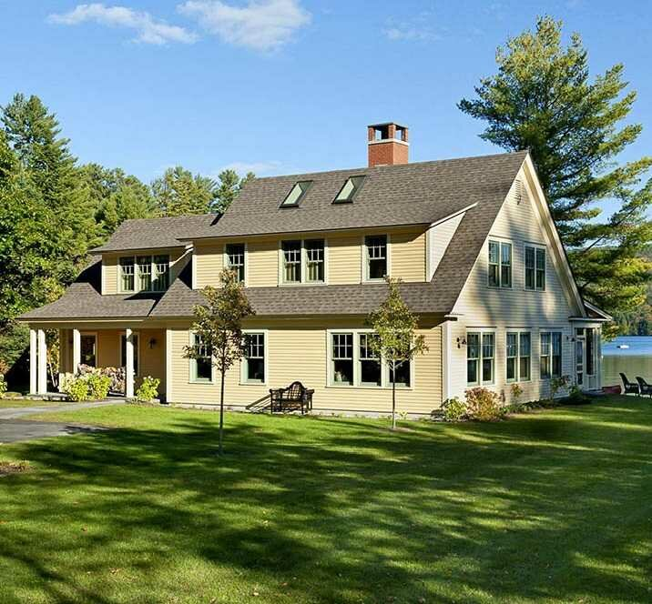

Наркологический центр Тонус Плюс
Избавление от зависимостей по инновационной методике, подтвержденной научными институтами
Избавление от зависимостей по инновационной методике, подтвержденной научными институтами

Стандарт
Длительность курса лечения зависит от выбора программы «28 дней» или «90 дней»
При полной оплате курса «90 дней» возможен бонус, в виде дополнительного месяца амбулаторного лечения и прохождения программы психокоррекции в центре
цена за месяц
15 000 грн.

Премиум
Длительность курса лечения зависит от выбора программы «28 дней» или «90 дней»
При полной оплате курса «90 дней» возможен бонус, в виде дополнительного месяца амбулаторного лечения и прохождения программы психокоррекции в центре
цена за месяц
25 000 грн.

VIP
Длительность курса лечения зависит от выбора программы «28 дней» или «90 дней»
При полной оплате курса «90 дней» возможен бонус, в виде дополнительного месяца амбулаторного лечения и прохождения программы психокоррекции в центре
цена за месяц
40 000 грн.
В основу реабилитационной стратегии легла уникальная на постсоветском пространстве программа «7 навыков выздоравливающего наркомана и алкоголика», с ее основными акцентами на выработку принципов личностного роста и принципов преодоления зависимости.
Кроме того комплексность заключается в планомерной, точечной проработке с помощью квалифицированных специалистов физического, интеллектуального,нравственного и социального измерения зависимой личности, которые были разрушены в период употребления.
√ Данная программа получила рецензии ведущих международных институтов в области наркологии. И в 2017 была одобрена и рекомендована к использованию в реабилитационных учреждениях.
Уникальная реабилитационная методика «Тонус плюс» включает в себя следующую этапность:
Именно такое поэтапное восстановление личности зависимого принесет качественный желаемый результат.
Каждый определенный этап курируется соответствующими для него специалистами, такими как:
Именно вышеуказанные специалисты занимаются разработкой и коррекцией индивидуального плана лечения под каждого пациента.


Специалисты Тонус Плюс, имеют право врачебной деятельности в сферах: наркология, психиатрия, психология. Все врачи имеют высшее образование и большой опыт в сферах лечения, реабилитации и предотвращении срывов зависимых. Процент выздоровления пациентов говорит сам за себя.
Лечениепациентов проходит не в закрытом государственном учреждении, а в комфортабельном загородном коттедже. Сбалансированный качественный рацион питания. Свежий воздух наряду с витаминным комплексом будут стимулировать положительные изменения у каждого клиента.
Поэтапная, грамотно выстроенная методика преодоления различных зависимостей
5 причин доверить решение вашей проблемы именно центру помощи зависимым «Тонус плюс»:
Все вышеперечисленные атрибуты вы можете увидеть воочию посетив бесплатную первичную консультацию в нашем центре.
Если вы столкнулись с такой проблемой как наркомания и алкоголизм и не знает как ее решить, я Вам предлагаю посетить наш психо- социальный реабилитационный центр, получить бесплатную консультацию наших специалистов и воочию увидеть в действии нашу реабилитационную машину.
вулиця Хрещатик, 7/11, Київ
 неделю назад
неделю назад
 месяц назад
месяц назад
 месяц назад
месяц назад
 месяц назад
месяц назад
 3 months ago
3 months ago
 3 months ago
3 months ago
 2 месяца назад
2 месяца назад
Зависимость. На различных форумах и сайтах, от разных специалистов, исходя из опыта других людей, мы получаем информацию о том, что же такое зависимость. Это формирует наше представление об этом явлении. Но верно ли оно? Что собою представляет зависимость? И есть ли выход?
В целом, зависимость можно разделить на два основных вида: химическая и не химическая. Более развёрнуто мы рассмотрим химический вид зависимости, а именно, наркоманию и алкоголизм.
Наркомания и алкоголизм – это болезнь, которая обусловлена зависимостью от наркотического, алкогольного средства или психотропного вещества.
Важно отметить, что в результате употребления этих веществ формируется психическая и физическая зависимость.
Физическая зависимость проявляется в том, что организм человека не может нормально функционировать без наркотика или алкоголя, и в случае отмены употребления развивается абстинентный синдром.
Абстинентный синдром представляет собою состояние соматовегетативных:
Неврологических:
Психологические расстройства:
Выраженность клинической симптоматики зависит от стадии зависимости, но в любом случае является опасной для жизни и требующей оказать неотложную квалифицированную медицинскую помощь.
Снять абстинентный синдром возможно путём детоксикации организма.
Детоксикация помогает вывести человека из острого периода и добиться относительной стабилизации физического состояния человека, но не является единственным и заключительным этапом лечения зависимости. Путём детоксикации можно повлиять на преодоление физической зависимости.
Но основным и ключевым компонентом аддикции является синдром психической зависимости от психоактивных веществ.
Синдром психической зависимости представляет собою патологическое влечение к психоактивному веществу и достижения психического комфорта только после употребления желаемого.
Синдром психической зависимости отличается от эйфории тем, что для достижения психического комфорта зависимый употребляет не просто, чтобы получить удовольствие, а скорее, чтобы уйти из состояния неудовлетворения. Это стремление избежать психического и эмоционального неудовлетворения настолько сильно, что зависимый не в состоянии отказаться от дальнейшего употребления психоактивных веществ.
На сегодняшний день единственным эффективным методом преодоления зависимости, гарантирующим сохранение трезвости в дальнейшем является психосоциальная реабилитация зависимых.
Психосоциальная реабилитация представляет собою набор методов, направленных на проработку зависимого поведения и формирование здорового мышления.
Специалисты и сотрудники центра в период реабилитации зависимого работают со всеми сферами человека, на которые повлияла зависимость:
В большинстве случаев синдром психической зависимости от наркотиков и алкоголя является основной причиной рецидивов. Именно по этой причине ключевую роль в лечении зависимости стоит уделить психосоциальной реабилитации зависимых.
Наркологический центр «Тонус плюс» в качестве психосоциальной коррекции зависимых предлагает работу с резидентами центра по сертифицированной программе «7 навыков выздоравливающего наркомана и алкоголика».
Длительность курса психосоциальной реабилитации может быть разным, и часто зависит от патологии состояния зависимого,в следствии употребления.
Курс психосоциальной реабилитации в наркологическом центре «Тонус плюс» рассчитан на 28 дней и 90 дней. В среднем, этого времени достаточно, чтобы заложить зависимому правильные ориентиры и ценности трезвой жизни. Далее, все зависит от того, как выздоравливающий зависимый будет следовать этим навыкам и придерживаться ценностей трезвости.
Курс «28 дней» включает в себя:
Курс «90 дней» на первом этапе включает в себя те же мероприятия курса «28 дней» , и отличается тем, что больше времени на углубления в проблему зависимости, и применяются практические шаги к выздоровлению под руководством специалистов центра.
Таблица клиентских выгод
Реабилитация – это долгосрочный и болезненный процесс поведенческих, физических, социальных и нравственных изменений. Ключевым аспектом начала лечения является осознания своей болезни или плачевности своего текущего состояния. Зависимые смешные люди потому, что хотят за пару недель выбраться из проблемы в которую культивировали годами.
Реабилитация от алкоголизма – это:
— Комплекс определенных мероприятий направленных на изменение поведения и мышления алкозависимого человека.
— Необходимая пошаговая этапность (мотивация, детоксикация, реабилитация)
— Длительный и сложный процесс, а не единожды совершенное событие.
Да, у нас есть полный спектр медикаментозного лечения наркомании: детоксикация, кодирование по двум методам, установка блокираторов «Налтрексон» и др.
От 28 дней до 1 года, все зависит от того какие наркотические препараты, принимал пациент. Программа лечения подбирается индивидуально.


{kind=link}
{kind=link}
{kind=link}
{kind=link}
{kind=link}
{kind=link}
{kind=link}
{kind=link}
{kind=link}
{kind=link}
{kind=link}
{kind=link}
{kind=link}
{kind=link}
{kind=link}
{kind=link}
{kind=link}
{kind=link}
{kind=link}
{kind=link}
{kind=link}
{kind=link}
{kind=link}
{kind=link}
{kind=link}
{kind=link}
{kind=link}
{kind=link}
{kind=link}
{kind=link}
{kind=link}
{kind=link}